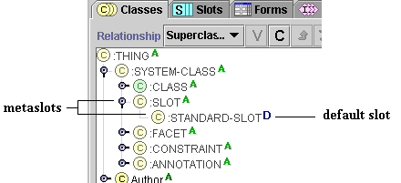
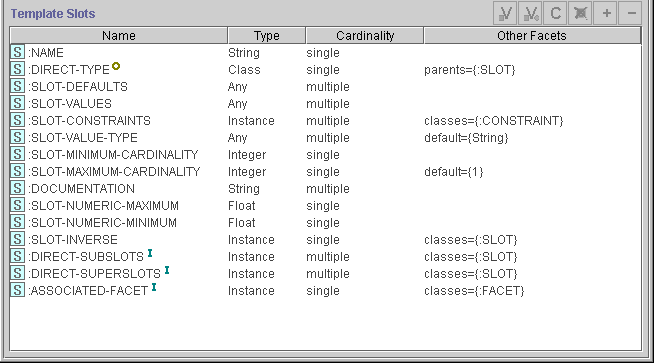
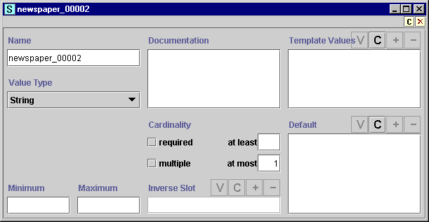

Metaslots, or slot metaclasses, are similar to metaclasses, except that they determine the properties of slots instead of classes. A slot metaclass is a metaclass that can be used as a template to determine the way Protégé constructs a slot. By creating a new metaslot, you can create a different template for selected slots. This allows you to attach additional information to your slot at the class level. This is especially useful if you have several slots, each of which has a similar structure.
If you have multiple metaslots in your project, Protégé allows you to choose which metaslot you want to use as the default for every new slot you create. This feature is not available for classes in Protégé-2000, since it is more useful for slots.
Metaslots are part of the :SLOT hierarchy in the Class Tab, which is included in every project. Every subclass of a metaslot is also a metaslot.
Note that metaslots appear at the Class Tab. This is because every slot is an instance of a slot metaclass. Slots are not values or subslots of a global slot.

By default, when a slot is created as part of a project, Protégé treats that slot as an instance of the slot metaclass :STANDARD-SLOT. The properties of :STANDARD-SLOT create the initial view of the slot and determine the properties in the Slot Form. Just as with :STANDARD-CLASS, you can look at :STANDARD-SLOT to see how the slots for a metaslot translate to properties of a slot.
In a new project, :STANDARD-SLOT has a Default  icon to indicate that it is the default metaslot used for creating new slots. If
you create a new metaslot and change the default, the new default will have the
icon to indicate that it is the default metaslot used for creating new slots. If
you create a new metaslot and change the default, the new default will have the  icon.
icon.
Just as with :STANDARD-CLASS, the slots for :STANDARD-SLOT translate into fields in the Slot Form, as well as other associated properties of the slot. Various slots of :STANDARD-SLOT create the entry fields and any default values for Value Type, Cardinality, Maximum and Minimum, etc. The correspondence between slots for a metaclass and fields in the Class Form is explained in more detail in Understanding Metaclasses.


Because of the power of metaclasses, you may want to be particularly cautious how much you experiment with a current project. It is a good idea to work on a copy.
Next: Creating a Metaslot